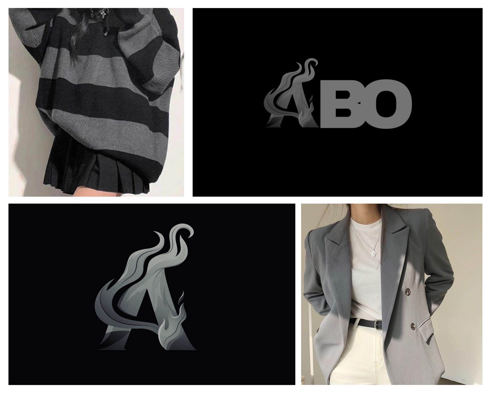
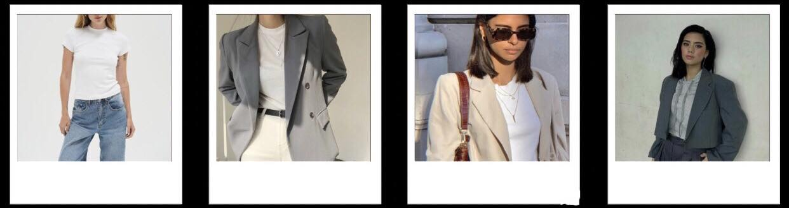
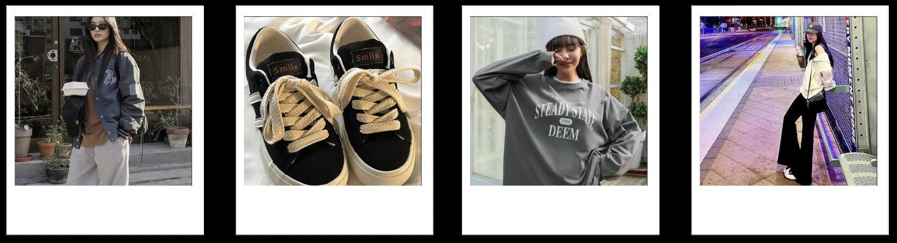
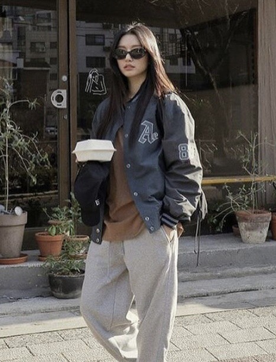
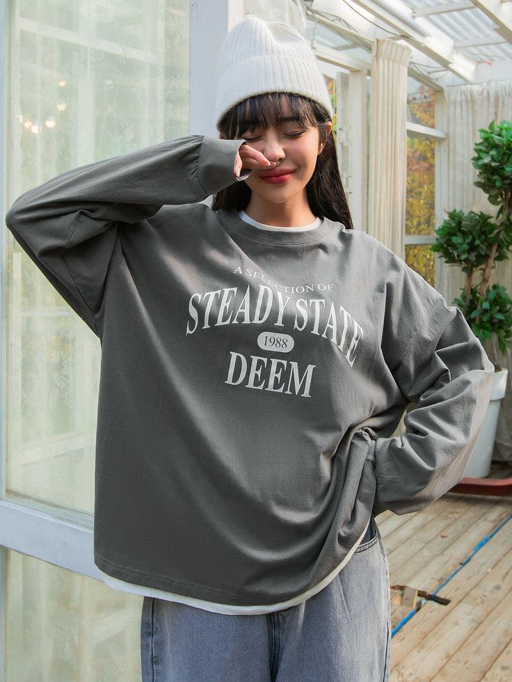

Discover the Secrets of Dressing Like a Star
Embrace Minimalist Elegance and Streetwear Coolness
Explore how you can create looks that reflect the essence of your favorite artist with Abo. Whether you're drawn to sleek simplicity or urban edge, we’ll guide you step-by-step to nail these styles.
What is Minimalist-Style Clothing?
Simplicity Meets Elegance
Minimalist clothing is all about simplicity, functionality, and refinement. This style focuses on fine-tuning your personal look with pieces that match your body shape and skin tone.
How to Dress Minimalist
- Start with the Basics: Begin with a white crew neck t-shirt as your foundation. Pair it with jeans for a casual yet refined look.
- Layering: Add a jacket or blazer for extra style. Complete the look with white sneakers or loafers to maintain the minimalist aesthetic.
- Accessorize: Finish your look with sunglasses and simple jewelry for a balanced touch.
- Get Inspired: Browse BINI Mikha's Instagram for outfit ideas and see how to incorporate minimalist fashion into your own style.
What is Streetwear-Style Clothing?
Urban Edge with High-Fashion Flair
Streetwear is a blend of casual, urban-inspired clothing and high-fashion elements, focusing on comfort and a cool, relaxed look.
How to Dress Streetwear
- Choose Your Tops: Opt for oversized or graphic tees and hoodies. Layer with bomber jackets, denim jackets, or parkas. Pair with baggy jeans, joggers, or cargo pants. 
- Select Footwear: Iconic or chunky sneakers are perfect for achieving a hip-hop or skater-inspired look.
- Accessorize: Complete your outfit with caps, beanies, crossbody bags, and simple jewelry like chains or rings. 
- Get Inspired: Check out BINI Mikha's Instagram for streetwear ideas and see how you can adapt her style to your wardrobe.
Finding Your Balance
Both minimalist and streetwear styles offer unique expressions in fashion. Some days, you might prefer a laid-back yet stylish look, while on others, you might opt for something simple and elegant. Just as BINI Mikha effortlessly blends high fashion with street style, Abo provides timeless pieces that complement both aesthetics, allowing you to create a balanced and chic wardrobe.
Category: Women